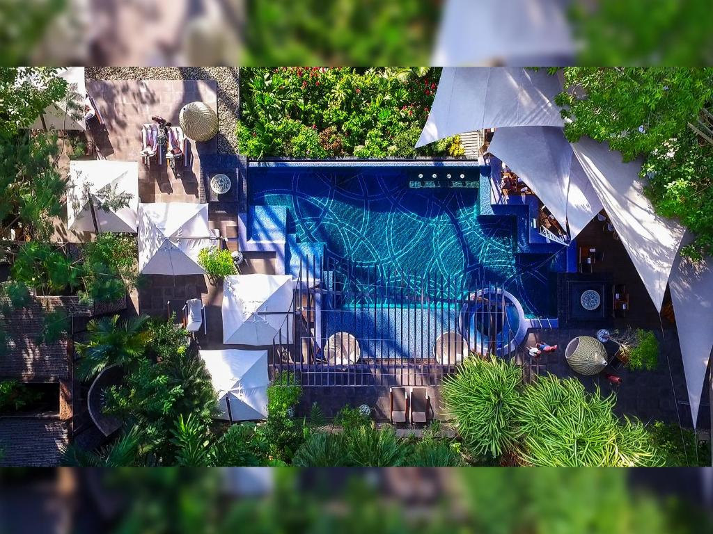

parrita
The Parrita canton is located in the Puntarenas province, in the shore of the Costa Rican Central Pacific, in the east limit of the Quepos canton and in the west limit of Garabito. The main city of the canton is Parrita, which is a district on its own.
-
Villa Blanca
Villa blanca en Esterillos con piscina.
Click to see more -
Hotel tulemar
Tulemar Resort is situated in Manuel Antonio. The resort has a private beach area, water sports facilities, and guests can enjoy a meal at the restaurant. Free private parking is available on site. .
Click to see more -
Sunset del Mar Beach Resort
Facing the beachfront, Sunset del Mar Beach Resort offers 4-star accommodation in Esterillos Este and has an outdoor swimming pool, fitness centre and garden. With free WiFi, this 4-star hotel has a restaurant and a bar. Every room is fitted with a patio with views of the garden. .
Click to see more -
 Hotel Oceans Two
Hotel Oceans Two
Located in Manuel Antonio, 1.4 km from Playitas Beach, Hotel Oceans Two provides accommodation with an outdoor swimming pool, free private parking, a garden and a terrace. Each accommodation at the 4-star hotel has sea views, and guests can enjoy access to a restaurant and to a bar. The accommodation features room service, a concierge service and currency exchange for guests.
Click to see more -

Makanda by The Sea Hotel
We would like our Guests to experience Costa Rica at its fullest and most beautiful. As such, during the high season (01/01/2022 - 30/04/2023), Makanda By The Sea observes a 3 night minimum stay. We can't wait for our Guests to spend their holidays in our elegant escape.
Click to see more -
 Jungle Vista Boutique Hotel
Jungle Vista Boutique Hotel
Situated in Manuel Antonio, 400 m from Playitas Beach, Jungle Vista Boutique Hotel features accommodation with a garden, free private parking and a restaurant. Each accommodation at the 4-star hotel has mountain views, and guests can enjoy access to an indoor pool. The hotel also provides free WiFi as well as a paid airport shuttle service.
Click to see more -
Los Altos Resort
Los Altos Beach Resort & Spa offers free parking facilities and is situated a 5-minute drive from the Manuel Antonio beach. The Juan Santamaría International Airport is a 2.5-hour drive from the hotel.
Click to see more